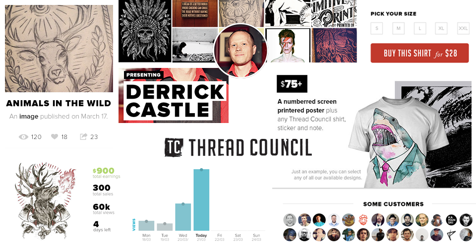
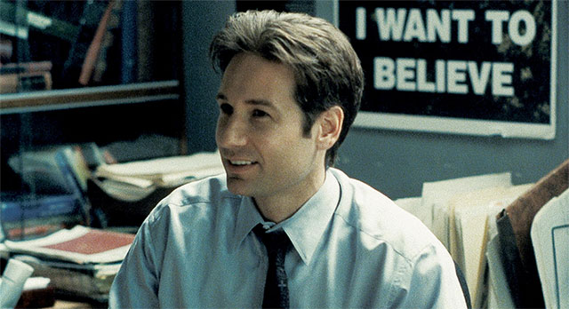

I support that belief by building user interfaces for game changer projects.

Thread Council
The Robin Hood of man’s apparel.
Advances in technology have proven many times that convenience often trumps fidelity. For example, MP3s became popular — even at their initial low bitrates — because it was more important for us to have all of our music available wherever we were than it was to have the best possible audio quality. Similarly, digital books, magazines, and newspapers are replacing their analog counterparts at an increasing rate because convenient and instant access to content frequently supersedes aesthetics.
I also like writing about things that live on my mind.

I want to believe
An essay about how important is to think why first.
A working class hero
I live in Villa Carlos Paz, a beautiful small town located in Argentina. I have a beautiful daugther, and a dog who just can’t stop barking. I also got the girl of my dreams. If you wanna talk about some project or just wanna share your own beliefs with me, feel free to shoot me an email anytime. I answer all my emails.